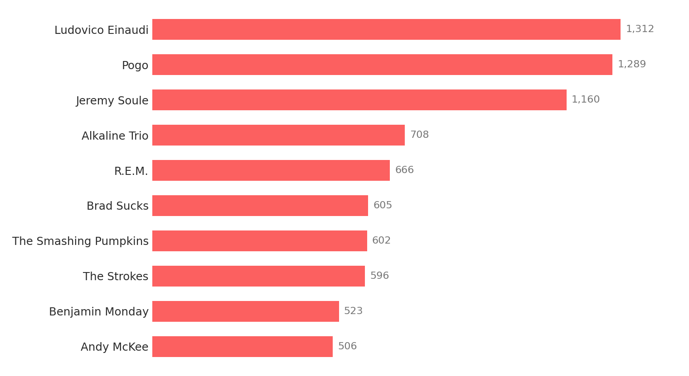
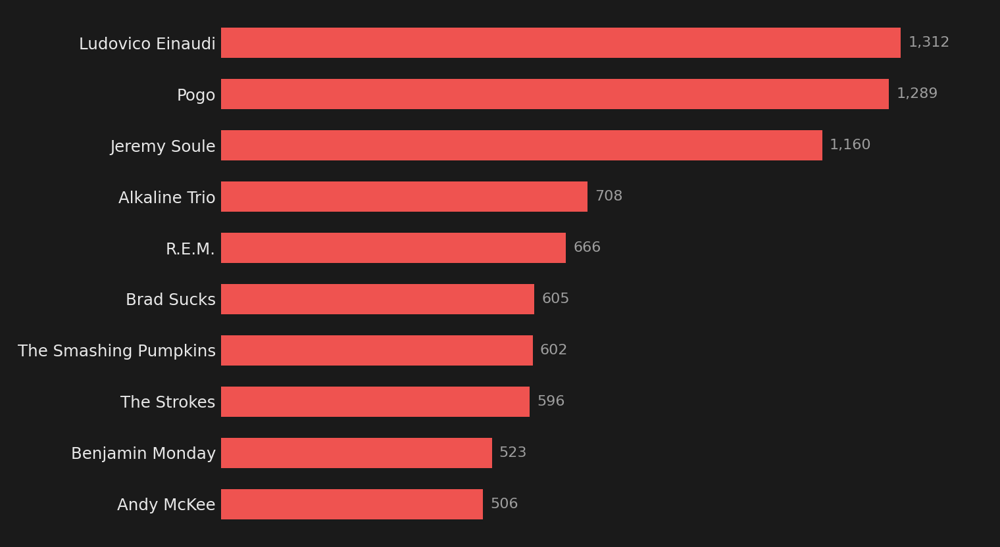

What 50,000 Scrobbles Say About Me
As I write this, my Last.fm profile reads 49,716 scrobbles, which means that sometime in the next couple of weeks, probably while I'm doing the dishes or debugging something, a counter I switched on 15.5 years ago will tick to 50,000.
The counter has been running since the 10th of March, 2011. While I've always failed to keep a diary throughout my life, it turns out I've been keeping one anyway, fifteen years long, written one song at a time, and I only recently thought to read it.
A quick glossary
- Scrobble: a record of one song you listened to, sent automatically to a service called Last.fm.
- Last.fm: a website that has been logging what its users listen to since 2002.
- Loved track: a manual button on Last.fm for marking a song you, well, love.
The top ten makes no sense
Here is what fifteen years of listening looks like when you sort it:


Read as a list of favourite artists, this is gibberish. An Italian pianist, an Australian producer who makes music out of chopped-up Disney films, the man who composed the orchestral soundtrack to Skyrim, a Chicago punk band (who I entirely disavow now), and R.E.M., all sharing a podium. I guess this might be why the algorithms of music apps really struggle to find music I might like. It may as well just hit shuffle and hope for the best.
But that's because the chart isn't a list of favourites. It's strata. Each of those artists is a geological layer from a different era of my life, compressed into one picture. So let me read it the order it was written.
The Scotland years
Alkaline Trio, Yellowcard, Jimmy Eat World, The Smashing Pumpkins, The Strokes, The White Stripes, Manic Street Preachers, R.E.M. This is the music of being young in Scotland: burned CDs that I'd play in my parents car (they were too kind in letting me play Dragonforce and Children of Bodom, ooft), band t-shirts, and lots and sitting in my room with Ultimate Guitar on my computer screen trying to play songs way too complex for my intermediate level guitar skills.
The evidence survives. Here is me playing "Cherub Rock" by The Smashing Pumpkins, 17 years ago:
A few gigs made it into this layer too: Rammstein (my first, at twelve: being surrounded by that much fire leaves an impression), The White Stripes, Smashing Pumpkins. All were great (though I ended up seeing Smashing Pumpkins 3x in total, with each time presenting less excitement from the band, then Billy Corgan spat into the crowd and onto my face, which I was less than pleased about).
What strikes me now is that almost none of this layer is still accumulating. R.E.M. sits at 666 plays, and most of the others have barely moved in a decade. The person who needed them gradually changed, the way a diary's handwriting changes without any single entry looking different from the last. Though I do still listen to a lot of Dragonforce and Symphony X.
The free internet
The next layer is stranger, and I suspect only people of a very specific internet generation and online set of communities will get: Brad Sucks, Josh Woodward, Jonathan Coulton, Lemon Demon, and Pogo, who between them account for thousands of listens. My sixth most-played artist of all time is a one-man band from Canada who called himself Brad Sucks and gave his music away for free on the internet. I actually talked to him once, and he came across as depressed as his songs would indicate he is, which in retrospect I shouldn't have been surprised by. He's a good example of the tortured artist, creating beautiful music out of a tough life.
This was the era I've written about before, when the internet felt like a place made by people rather than companies. Musicians put entire albums online for nothing, because the idea that strangers anywhere in the world could hear your songs was still intoxicating enough to be its own payment. I found Brad Sucks through Last.fm, Jonathan Coulton through WCRadio (warcraft radio) podcasts, and Lemon Demon through a Flash animation about fictional characters having a fight (though this isn't even Neil's best song, FYI, just the most well known).
The loading screen years
Jeremy Soule, who scored Morrowind, Oblivion, and Skyrim, sits at number three with 1,160 plays. Below him: Jason Hayes and Russell Brower, composers for World of Warcraft. Howard Shore's Lord of the Rings scores. Ben Prunty's soundtrack for FTL. C418's Minecraft music. Marcin Przybyłowicz's Witcher 3 score, which I was apparently listening to earlier this week.
My eleventh most-played artist of all time is Paradox Interactive, which is a Swedish video game publisher. I have played their grand strategy games so much that an entire corporation is functionally one of my favourite bands, sitting comfortably above Rammstein, which is an odd thought.
It would be easy to read this layer as "Ken played too many video games" (which, well, yeah) but I think it also is the point where music stopped being something I identified with from a teenage angst perspective, worrying about girls or how I was perceived. Game soundtracks are often orchestral, epic, or relaxing, comforting, nostalgic. They accompany you, painting an aural embellishment on top of the stories, the visuals and the characters you play as and with.
If you want one track that explains this entire layer, it's "Totems of the Grizzlemaw", the Grizzly Hills music from Wrath of the Lich King. I have spent more hours inside this piece of music than many of my favourite albums combined:
I loved it enough that it crossed the line from accompaniment back into activity: ten years ago, in the middle of the chaos of renovating my home at the time, I sat down amidst the "stuff" room and recorded an acoustic cover of it. I also wrote up the tab, so the Ultimate Guitar habit from the Scotland years clearly never left either:
It wasn't a one-off, either. Here's me playing Dan Romer's Far Cry 5 melody, using a tab by Eddie van der Meer:
Music to think to
My number one artist of all time, the musician the data says I love more than any other, is Ludovico Einaudi, a minimalist Italian pianist, at 1,312 plays.
I do genuinely like Einaudi. But he is not my favourite artist. He is my favourite colleague. Einaudi is what plays when I'm writing a paper, or reading about some technical concept. He is a large part of my "Study" playlist. The same is true of the rest of this layer: Andy McKee and Don Ross's fingerstyle guitar, the Oscar Peterson Trio, Mike Oldfield, an ocean of lofi channels with names like oatmello and Lofi Fruits Music, and Bach, who has been study music for three hundred years and remains undefeated. The study playlist is accessible if you want to hear it.
This is the layer that has been accumulating through my PhD and my postdocs, and it reveals that the artist at the top of my all-time list got there by being background. So, I guess scrobbles don't measure love. Einaudi is number one for the same reason my office chair has more hours with me than my closest friends do.
Music My Partner Showed Me
One of the cool things about being with a musician is they open your mind up to not one but many new worlds of music. Suddenly I'm listening to beautiful folk pieces that speak to my heart:
Bollywood songs that I find myself addicted to (and learned the dance to):
And somehow ended up being featured in a music video by a musical artist dear to us both (00:48 seconds):
What the diary leaves out
Like any diary, the record lies partly by omission. There are no scrobbles for the first chunk of my life, so the bands of my childhood are missing entirely (lots and lots of Mike Oldfield, The White Stripes and Busted), as is anything played on a car radio, at a gig, or in someone else's kitchen, or even on apps where I can't so easily send the listening data to Last.fm.
And the counting itself is skewed in a way any data scientist will recognise: it measures frequency when what we usually want is intensity. Last.fm actually has a correction for this, the "loved track" button, which requires a deliberate click rather than passive playback. I have 559 loved tracks against 49,716 scrobbles. I've written before about how badly rating systems capture what we actually value, and my own listening data turns out to be the same story: the chart knows exactly what I did and almost nothing about what it meant.
If you want to poke through the full dataset yourself, the live charts below are generated straight from my profile:
And for more of all this, the music page is the living version of this post: the album wall, the study playlist, and stats that keep counting while I'm not looking.
Common questions
What counts as a scrobble?
A play of a track, logged automatically by whatever player or streaming service you've connected to Last.fm. Most scrobblers only count a play once you're at least halfway through the song, so skips don't count.
Isn't letting a website log fifteen years of your listening a bit creepy?
I really don't care.
Do you still scrobble everything?
Everything that goes through my own devices, yes. After fifteen years it would feel strange to stop. The gaps would bother me more than the surveillance of myself does.